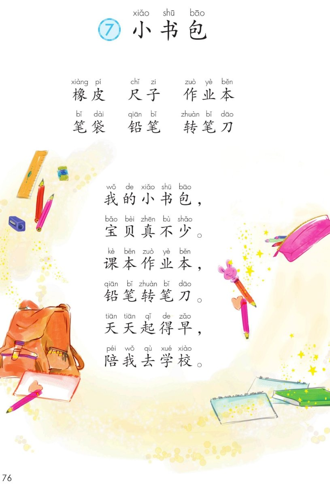
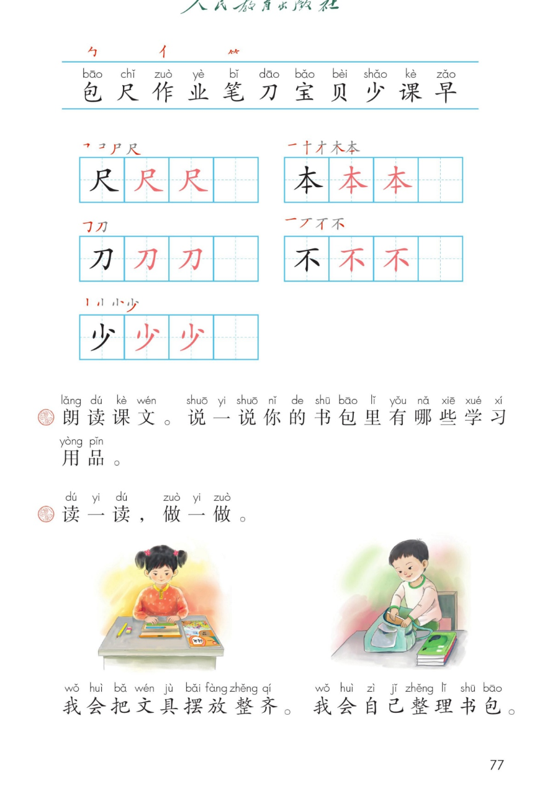

×
🔊 手机听不到声音怎么办？
① 先把手机
媒体音量调大 ，确认没开静音、没连蓝牙耳机；在微信里打开的，点右上角「⋯ → 用浏览器打开」。
② 还是没声音？到应用商店免费下载
Microsoft Edge 浏览器 （它自带朗读发声），用它打开本页面就能出声。
③ 换了 Edge 仍然没声音，说明这部手机的
硬件/系统不支持 网页朗读（多为老旧机型）；近几年买的新手机一般都能正常播放。
→ 打开声音自检
统编版 · 一年级上册 · 第六单元 · 识字 · 识字7
⑦ 小书包
我的小书包，宝贝真不少。课本作业本，铅笔转笔刀。
学习用品 三个偏旁 整理书包 闯关 8 题
这一课学什么： 认一认书包里的学习用品 ，朗读儿歌；认识 11 个字，
写好「尺、本、刀、不、少」；学会自己整理书包 。🎒
课本第 76 页 点卡片听名称与用途
课后题： 说一说你的书包里有哪些学习用品。课本、作业本、铅笔、橡皮、尺子 和转笔刀 。」🗣️
课本第 76 页 点一行读一行
读前小贴士： 六行儿歌，少、刀、校 押韵，读起来朗朗上口。
最后两行把小书包当成了天天陪你上学的好朋友 。💛
🎵 全首连读
🔁 跟读模式（读完一句停一停）
课本第 77 页识字条 点一张读一张
识字条 · 连起来读
包 尺 作 业 笔 刀 宝 贝 少 课 早 —— 「勹 」包字头、「亻 」单人旁、「⺮ 」竹字头
课本第 77 页 点卡听读
课本第 77 页田字格 先看笔顺，再动笔
课本第 77 页课后题 点卡片听读，回家试一试
整理书包三步： ① 课本作业本按大小叠好 → ② 铅笔橡皮尺子收进笔袋 →
③ 笔袋放最上面 。每天睡前做一次，早上不着急。✅
点题目可以听题，点选项就判对错，答完自动算分
已经答 0 题，答对 0 题。
点图放大

第 76 页 · 词语 · 儿歌《小书包》

第 77 页 · 识字条 · 田字格 · 课后题